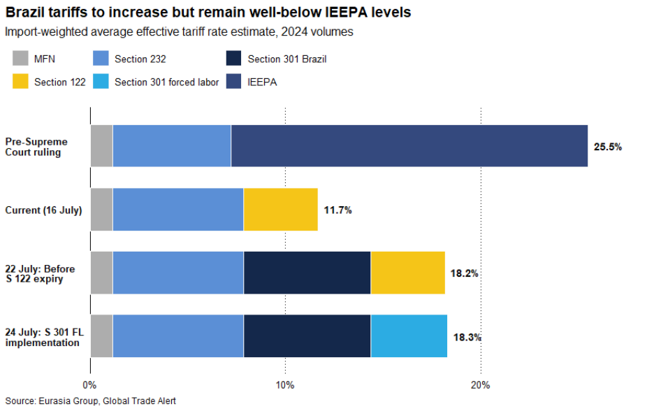
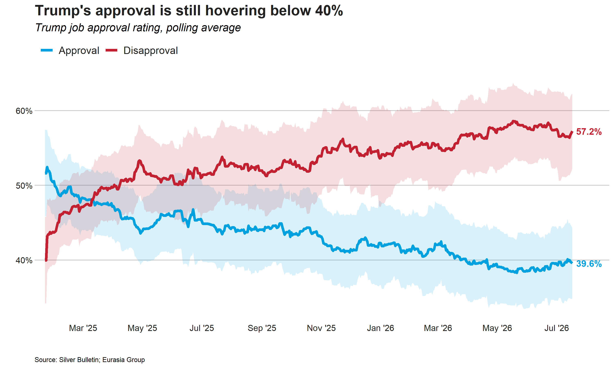
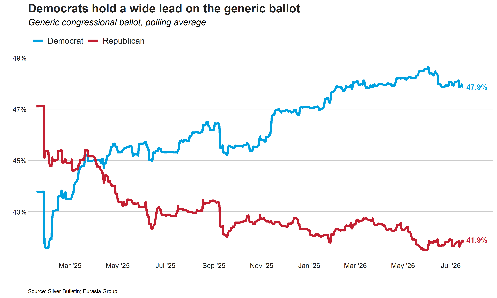

|
 |
|||
|
||||
|
||
Washington will keep moving up the escalation ladder on Iran. The US appears to be focusing on targets that impair Iran's long-term ability to both project force and maintain economic activity, suggesting a US strategy focused on degrading Iran's strategic position rather than solely forcing re-opening of the Strait of Hormuz. This aligns with Eurasia Group's basecase of continued escalation (55% odds) into mid-August, with the US aiming to force a weakened Iran to take a more conciliatory negotiating position (see Iran, MENA Crisis: Escalation likely as Iran sees path to Hormuz control, 15 July 2026).
No easy pathway to reduce new US tariff on Brazil in 2026. Washington has placed a 25% tariff on Brazilian imports under Section 301 trade authority, with broad carve-outs for rare earths, beef, and iron. The new tariffs are set to take effect on July 22, two days before the expiration of the 10% global Section 122 tariff. Adjusted for carve-outs, the new effective tariff rate will fall below IEEPA levels (see chart below).
 Polling update: Signs of moderate consolidation a boost for Michigan Democrats. The week’s most notable poll was a Detroit News survey of the Michigan Democratic Senate primary, the first major nonpartisan poll since Mallory McMorrow exited the race.
  Quote of the Day "The intelligence community has zero evidence that someone has flipped — that a foreign power flipped — a vote in 2020, 22 or 24." - Conservative commentator John Solomon, who joined the White House staff to lead efforts investigating election security, speaking to reporters after last night's presidential speech on the subject. Undercutting the core of Trump’s arguments that foreign interference cost him the 2020 election, Solomon’s remarks will be a key focus for Democrats in their response to the speech. On the Radar 21 July: Senate Appropriations Committee hearing on Pentagon's supplemental request 24 July: Section 122 tariffs expire 27 July: Deadline for Maine Democratic Party to name Senate candidate 4 August: Michigan primary election 10-28 August: Congressional recess 3 November: National midterm elections |